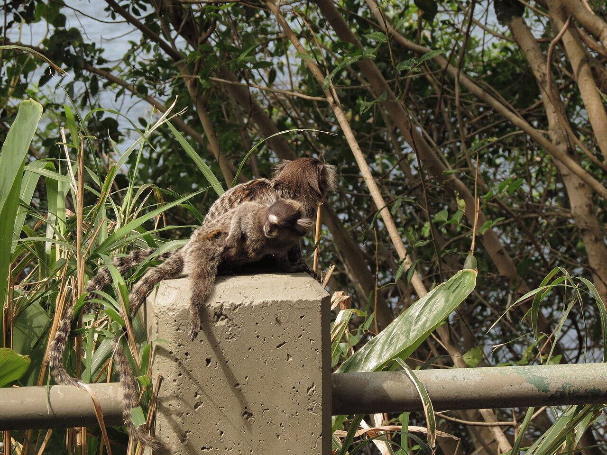
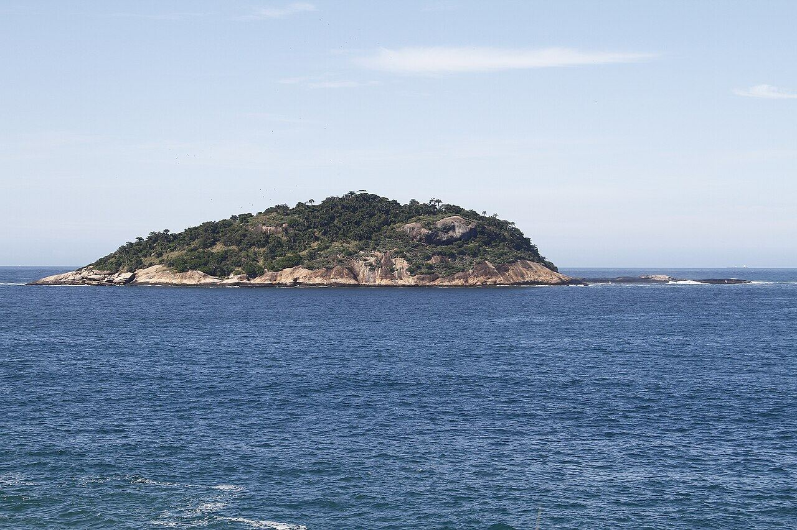
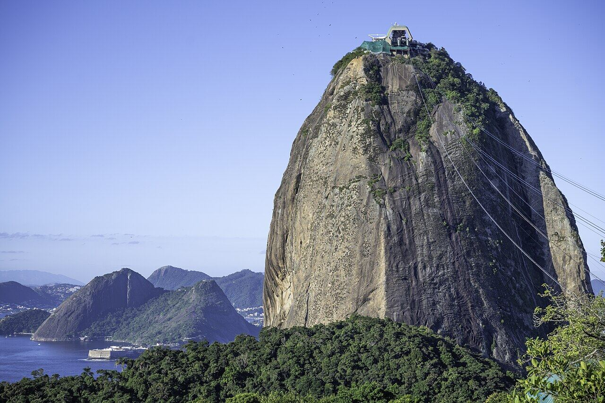

Pista Cláudio Coutinho e trilha do Morro da Urca
Urca
São trilhas leves, com mar e mata, e às vezes dá para ver micos.
Nosso comentário
A pista começa na Praia Vermelha e segue plana, entre o costão e a mata, com o mar batendo nas pedras. Quem quiser um pouco mais pode subir a trilha do Morro da Urca, curta e bem marcada, e de lá seguir de bondinho até o Pão de Açúcar.
Dicas
- Vão cedo, antes do calor.
- Levem água.
- Da trilha, dá para pegar o bondinho e emendar com o Pão de Açúcar.
Combina com
- Pão de Açúcar de dia
Fotos do lugar


